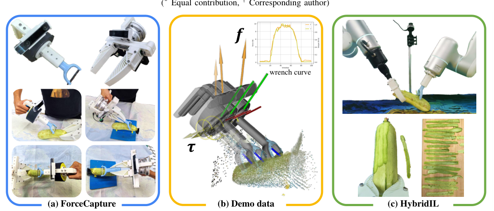
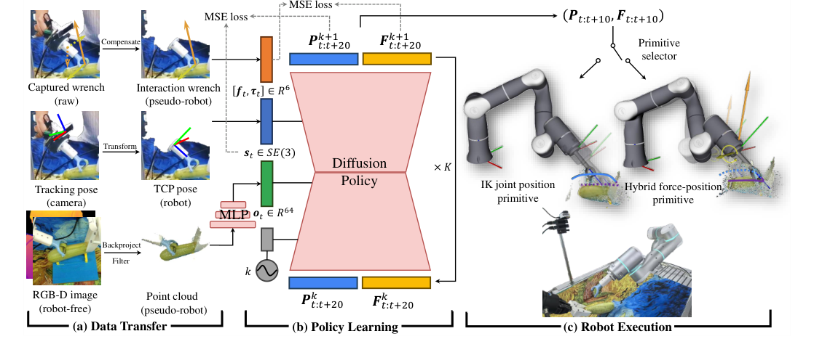
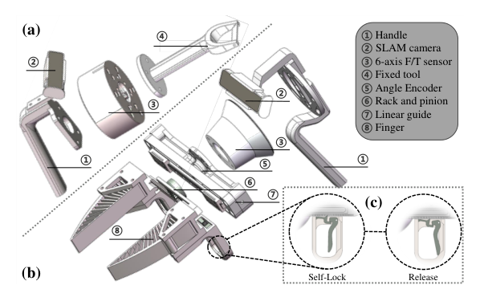
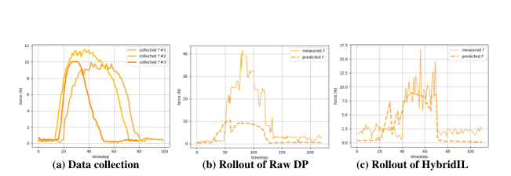

Background & Motivation
ForceMimic 是一套以「力」為核心的機器人學習系統,由兩塊拼成:(1) ForceCapture——一個約 $50、免機器人的手持式力-位置擷取器,讓人「徒手」自然操作工具就能同時錄下位姿與六軸力/力矩;(2) HybridIL——一個同時預測位姿與力(wrench)的擴散策略,用正交的混合力-位置控制原語去追蹤預測。在削櫛瓜這類接觸密集任務上,成功率比純視覺模仿學習相對提升 54.5%。
ForceMimic is a force-centric robot-learning system with two halves: (1) ForceCapture—a ~$50 robot-free handheld force-motion rig that lets a person operate a tool bare-handed while recording pose and six-axis force/torque; (2) HybridIL—a diffusion policy that predicts both pose and wrench and tracks them via an orthogonal hybrid force-position control primitive. On contact-rich zucchini peeling it raises success by a relative 54.5% over pure-vision imitation learning.

如果只有 30 秒In 30 seconds
- 問題 — 人類靠「力覺」修正視覺軌跡的誤差,但機器人模仿學習幾乎只學軌跡、不學力;而且力覺示範資料極難收集——網路人類影片沒有力、力回饋遙操作又慢又不自然。
- Problem — Humans use force sensing to correct vision-guided trajectory errors, yet robot imitation learning mostly learns trajectories, not forces; and force-centric demo data is very hard to collect—Internet human videos have no force, and force-feedback teleop is slow and unnatural.
- 方法 — ForceCapture:把六軸力感測器夾在工具與握把之間,靠棘輪自鎖 + 重力補償,徒手就錄下「純交互力」;HybridIL:擴散策略同時預測位姿與力,再用正交的混合力-位置控制去追蹤。
- Method — ForceCapture: a six-axis F/T sensor between tool and handle, with ratchet self-lock + gravity compensation, records pure interaction wrench bare-handed; HybridIL: a diffusion policy predicts pose and wrench, then an orthogonal hybrid force-position controller tracks them.
- 結果 — 收集效率:削一根櫛瓜 ForceCapture 約 4.5 分鐘 vs 遙操作 13 分鐘;削瓜任務動作成功率 100% vs Raw DP 80%,「連續削皮 >10cm」則 85% vs 55%(相對 +54.5%)。
- Results — Collection: ~4.5 min/zucchini vs 13 min for teleop; motion success 100% vs 80% (Raw DP), and "continuous peel >10 cm" 85% vs 55% (a relative +54.5%).
領域脈絡Field context
機器人模仿學習(Imitation Learning)近年靠 Diffusion Policy、3D 點雲策略(DP3、RISE)等大放異彩,但這些方法把「動作」等同於「末端位姿軌跡」,在需要精細用力的接觸密集任務上力有未逮。資料端也一樣:遙操作能拿到真機資料但不自然;手持擷取器(UMI、DexCap)自然又免機器人,但只錄位姿、不錄交互力。
Robot imitation learning has flourished with Diffusion Policy and 3D point-cloud policies (DP3, RISE), but these equate "action" with an end-effector pose trajectory, faltering on contact-rich tasks needing fine force control. Data collection mirrors this: teleop yields real-robot data but feels unnatural; handheld rigs (UMI, DexCap) are natural and robot-free yet record only pose, not interaction force.
既有的力覺操作研究(如 MOMA-Force 用檢索、ForceSight 用 transformer 產生力目標)多把力當「額外輸入或高階目標」,少有把力當成與位姿並列、要被策略連續預測並精確追蹤的動作維度。ForceMimic 把資料擷取與策略學習兩頭一起補上,主打「力覺閉環的端到端模仿學習」。
Prior force work (e.g., MOMA-Force via retrieval, ForceSight generating force goals with a transformer) mostly treats force as an extra input or a high-level goal, rarely as an action dimension on par with pose—continuously predicted and precisely tracked. ForceMimic tackles both ends—capture and policy—pitching an end-to-end force-in-the-loop imitation learner.
這篇的野心比一般「換個 backbone 刷分」更基礎:它主張純視覺軌跡模仿有結構性天花板——因為視覺無法直接感知接觸力,模型只能「連帶學會」用力,一旦部署時的力控制器與資料收集不一致就會崩。解法是把力提升為第一級公民,從資料(徒手錄力)到控制介面(正交混合力-位控制原語)整條打通。這是一個「系統論文」,價值在完整鏈路而非單一模型。
The ambition runs deeper than "swap a backbone for higher scores": it argues that pure-vision trajectory imitation has a structural ceiling—vision can't sense contact force, so a model can only "incidentally" learn to apply it and collapses when the deployment force controller mismatches the collected data. The fix promotes force to a first-class citizen, wiring it through the whole chain from data (bare-hand force capture) to control interface (an orthogonal hybrid force-position primitive). This is a systems paper: the value is the full pipeline, not one model.
核心洞見 · KEY INSIGHTSKEY INSIGHTS
這篇值得帶走的不只是「削瓜機器人」,而是底下幾個觀念:
What's worth taking away is not "a peeling robot" but these ideas:
- 力可以「徒手、免機器人」被自然錄下。 把六軸 F/T 感測器夾在工具與握把之間,加上棘輪自鎖(手指施力不汙染量測)與重力補償,就能在現場錄下乾淨的純交互力——比力回饋遙操作快約 3 倍且更自然。
- Force can be captured bare-handed, robot-free, naturally. A six-axis F/T sensor between tool and handle, plus a ratchet self-lock (so finger force doesn't pollute the reading) and gravity compensation, records clean pure-interaction force on-site—~3× faster than force-feedback teleop and more natural.
- 「力」與「位置」要正交地分工。 模型只管預測 wrench-位姿參數;真正保證兩者不打架的,是一個正交的混合力-位置控制器——沿運動方向做位置控制,在其正交平面做力控制。這是本文最關鍵的設計。
- Force and position must be split orthogonally. The model just predicts wrench-pose params; what actually keeps them from fighting is an orthogonal hybrid force-position controller—position control along the motion direction, force control on its orthogonal plane. This is the paper's key design.
- 「加入力感測」不必然更好——反而可能更糟。 反直覺結果:把機器人力當輸入的 Force DP 表現最差。原因是部署時的力分布(平均 ~20N、可達 40N)與資料集(~10N)嚴重不匹配。ForceMimic 把力當輸出動作去主動追蹤,才把交互力壓回 ~9N。
- "Adding force sensing" isn't automatically better—it can be worse. Counterintuitively, Force DP (force as input) does worst. Reason: at deployment the force distribution (avg ~20N, up to 40N) badly mismatches the dataset (~10N). ForceMimic treats force as an output action to actively track, pulling interaction force back to ~9N.
- 主動用力 = 更輕、更均勻。 HybridIL 全程維持 ~9N,削出厚薄一致的長條瓜皮;Raw DP 雖然「削得掉」卻常用到 40N,容易壓壞櫛瓜。力覺閉環把「粗暴成功」變成「精細成功」。
- Active force control = lighter, more uniform. HybridIL holds ~9N throughout, producing even, long peels; Raw DP does "peel" but often at 40N, risking crushing the zucchini. Force-in-the-loop turns "brute-force success" into "delicate success."
Problem Diagnosis
現況 vs 痛點Status quo vs pain points
| 現有做法Existing approach | 它的痛點Its pain point |
|---|---|
| 力回饋遙操作Force-feedback teleop (RH20T 等) | 能錄真機資料,但操作不自然、慢(削一根瓜 >13 分鐘、需訓練、易中斷),力控制不精細。Records real-robot data but is unnatural and slow (>13 min/zucchini, needs training, prone to interruptions), with imprecise force control. |
| 手持擷取器Handheld rigs (UMI / DexCap) | 自然、免機器人,但只用 SLAM 錄位姿,不錄交互力——策略對「用了多少力」完全無感。Natural and robot-free, but use SLAM to record only pose, not interaction force—the policy is blind to "how much force." |
| 軌跡型模仿學習Trajectory-based IL (Diffusion Policy, DP3) | 只輸出末端位姿序列;由固定的低階位置控制器執行,無法主動調節接觸力。Output only an end-effector pose sequence, executed by a fixed low-level position controller—can't actively modulate contact force. |
| 既有力覺方法Prior force methods (MOMA-Force, ForceSight) | 把力當檢索目標或高階文字目標;未把連續 wrench 當作要被端到端學習與追蹤的動作。Treat force as a retrieval target or high-level text goal; don't learn/track a continuous wrench as an end-to-end action. |
核心問題:「能否用一套自然、低成本的方式錄下人類的力覺示範,並讓模仿學習策略『主動地』預測並施加正確的力,而不只是走對軌跡?」
The core question: "Can we capture human force-centric demos naturally and cheaply, and make an IL policy actively predict and apply the right force—not merely follow the right trajectory?"
Gap 表 — 誰缺什麼,ForceMimic 怎麼補Gap table — who lacks what, and how ForceMimic fills it
| 方法Method | 限制Limitation | ForceMimic 如何補上How ForceMimic fills it |
|---|---|---|
| DexCap / UMI 手持擷取handheld capture |
只錄位姿。Records only pose. | 在工具與握把間加六軸力感測器 + 自鎖 + 重力補償,徒手錄純交互力。Adds a 6-axis F/T sensor + self-lock + gravity comp. between tool and handle to record pure interaction force bare-handed. |
| Diffusion Policy | 只輸出位姿,固定位控執行。Outputs pose only, fixed position control. | 改成同時輸出 wrench + 位姿,並切換到混合力-位置控制原語。Outputs wrench + pose together and switches to a hybrid force-position primitive. |
| MOMA-Force / ForceSight | 力=檢索/高階目標。Force = retrieval / high-level goal. | 力=被連續預測、正交追蹤的低階動作。Force = a continuously predicted, orthogonally tracked low-level action. |
注意這裡有兩個 gap 疊在一起:資料端(沒有自然的力覺資料)與演算法端(策略不預測力、控制器不追蹤力)。很多論文只補一頭,ForceMimic 的論述是「兩頭都得補,否則力覺資料收了也用不好」——這也正好呼應後面 Force DP 失敗的實驗:光把力塞進輸入,若控制端不對齊,反而有害。
Two gaps stack here: a data gap (no natural force data) and an algorithm gap (policy doesn't predict force; controller doesn't track it). Many papers patch one end; ForceMimic argues both are needed—else the force data you collect can't be used well. This foreshadows the failed Force DP: merely feeding force into the input, without aligning the control side, actually hurts.
Core Method
整體管線:擷取 → 轉換 → 學習 → 執行Full pipeline: capture → transfer → learn → execute

三個模組串起來(見 Fig.2):ForceCapture 收資料 → 資料轉換橋接 robot-free 與真機的域差 → HybridIL 學策略並經混合控制器執行。
Three modules in series (Fig.2): ForceCapture collects data → data transfer bridges the robot-free/real-robot domain gap → HybridIL learns the policy and executes it through the hybrid controller.
硬體:ForceCapture 擷取器Hardware: the ForceCapture rig

三大設計目標:可擴展性(低成本、易製造、相容不同力感測器)、現場力真實性(直接錄人操作的真實力,不像遙操作靠人工力回饋營造存在感)、人因舒適(重心在握把上方,不改變肌肉施力模式,否則錄到的力會失真)。
Three design goals: scalability (low cost, easy fabrication, sensor-agnostic), on-site force realism (directly record real human forces, unlike teleop that fakes presence via artificial force feedback), and ergonomic comfort (center of mass above the handle so muscle exertion patterns aren't altered—else recorded forces would be distorted).
資料轉換:robot-free → (偽)機器人Data transfer: robot-free → (pseudo-)robot
- 重力補償:力感測器量到的是「交互力 + 工具自重/慣性」。假設擷取過程準靜態(quasi-static),只需扣掉工具重力。做法:先準靜態移動一段、記錄多組位姿-力,構成過定方程組,用最小二乘估工具的質心與重量,再逐點扣除。
- Gravity compensation: the sensor reads "interaction force + tool weight/inertia." Assuming the capture is quasi-static, only tool gravity must be removed. Move the rig quasi-statically, log many pose–wrench pairs into an overdetermined system, and solve for the tool's center of mass and weight by least squares, then subtract per pose.
- 位姿轉換:T265 SLAM 相機的軌跡轉成機器人 TCP 位姿(初始把 T265 放在 L515 支架上定相對外參,同 DexCap 做法)。
- Pose transfer: the T265 SLAM trajectory is mapped to robot TCP pose (initially placing T265 on the L515 mount fixes the extrinsics, as in DexCap).
- 點雲處理:L515 的 RGB-D 反投影成點雲,濾掉背景與末端座標系以外的點(只留末端與物體),再體素化到 10,000 點——縮小收集資料與部署時點雲的差異。
- Point-cloud processing: L515 RGB-D is back-projected, then points outside the background/end-effector frames are removed (keep only end-effector + object) and voxelized to 10,000 points—shrinking the collection-vs-deployment point-cloud gap.
感測頻率:F/T 1000 Hz、T265 200 Hz、L515 30 Hz、編碼器 30 Hz;處理時全部對齊到 L515 的 30 Hz。
Sampling rates: F/T 1000 Hz, T265 200 Hz, L515 30 Hz, encoder 30 Hz; all aligned to L515's 30 Hz during processing.
HybridIL:同時預測位姿與力HybridIL: jointly predicting pose and force
HybridIL 以點雲為視覺輸入,經 MLP 編碼器壓成一維視覺特徵 \(o_t\in\mathbb{R}^{64}\),再與機器人 TCP 位姿串接成多模態表徵;用改良版 Diffusion Policy 去噪出未來 20 步的位姿與 wrench:
HybridIL takes a point cloud as visual input, encodes it via an MLP into a 1-D visual feature \(o_t\in\mathbb{R}^{64}\), concatenates it with the robot TCP pose into a multimodal representation, and uses a modified Diffusion Policy to denoise 20 future steps of pose and wrench:
訓練用 MSE loss 同時監督位姿與力兩條輸出(見 Fig.2(b))。關鍵約束:力與位置控制必須正交。模型本身不顯式建模正交性,而是交給下游一個正交的混合力-位置控制器去實現。
Training uses an MSE loss supervising both the pose and force outputs (Fig.2(b)). The key constraint: force and position control must be orthogonal. The model does not model orthogonality explicitly; instead a downstream orthogonal hybrid force-position controller enforces it.
執行:正交混合力-位置控制原語Execution: the orthogonal hybrid force-position primitive
這是本文的樞紐設計。由原語選擇器按預測力大小切換兩種控制原語:
This is the pivotal design. A primitive selector switches between two control primitives by predicted-force magnitude:
正交分解的做法(見 Fig.4):由前後位姿算出運動方向 \(\hat d\)(來自 \(P_{t:t+10}\)),把預測力 \(F_{t:t+10}\) 投影到 \(\hat d\) 的正交平面得到 \(F^{\perp}_{t:t+10}\);控制器同時追蹤 \(\hat d\)(位置)與 \(F^{\perp}\)(力)。若初始尚未接觸,先沿力方向反向做一個「壓下去」的動作以建立穩定接觸。
Orthogonal decomposition (Fig.4): compute a motion direction \(\hat d\) from consecutive poses (\(P_{t:t+10}\)), project the predicted force \(F_{t:t+10}\) onto the plane orthogonal to \(\hat d\) to get \(F^{\perp}_{t:t+10}\); the controller tracks \(\hat d\) (position) and \(F^{\perp}\) (force) at once. If not yet in contact, first press along the force direction to establish stable contact.
6N 閾值為經驗設定;控制經 Flexiv RDK 的關節位控與混合力-位控原語實現(機器人為 Flexiv Rizon 4)。
The 6N threshold is empirically set; control is realized via Flexiv RDK's joint-position and hybrid force-position primitives (robot: Flexiv Rizon 4).
符號白話對照Symbols in plain words
| \(f_t,\tau_t\in\mathbb{R}^6\) | wrench = 力 \(f\)(3 維)+ 力矩 \(\tau\)(3 維),六軸 F/T 感測器量到的量。Wrench = force \(f\) (3-D) + torque \(\tau\) (3-D), what the 6-axis F/T sensor reads. |
| \(s_t\in SE(3)\) | 機器人 TCP(工具末端)位姿,含旋轉與平移。Robot TCP (tool-tip) pose: rotation and translation. |
| \(o_t\in\mathbb{R}^{64}\) | 點雲經 MLP 壓成的一維視覺特徵向量。The 1-D visual feature from encoding the point cloud with an MLP. |
| \(P_{t:t+20}\) | 模型預測的未來 20 步位姿序列(執行時取前 10 步算方向)。Predicted 20-step future pose sequence (first 10 used to compute direction at run time). |
| \(F_{t:t+20}\) | 模型預測的未來 20 步力序列(wrench-位置參數的一部分)。Predicted 20-step future force sequence (part of the wrench-position params). |
| \(\hat d,\,F^{\perp}\) | 運動方向單位向量;把預測力投到 \(\hat d\) 正交平面得到的力控制目標。Motion-direction unit vector; the force target from projecting predicted force onto the plane orthogonal to \(\hat d\). |
Experimental Evidence
資料收集效率:ForceCapture vs 遙操作Collection efficiency: ForceCapture vs teleop
| 方法Method | 削一根櫛瓜耗時Time / zucchini | 備註Notes |
|---|---|---|
| 人類直接徒手Human (bare hand) | 2.9 min | 參考上限reference upper bound |
| ForceCapture (Ours) | 4.5 min | 幾乎不需訓練、一次就上手、無中斷near-zero training, proficient in one try, no interruptions |
| 力回饋遙操作Force-feedback teleop | 13 min | 需額外訓練;過程 3 次因操作失誤中斷needs training; 3 interruptions from operator errors |
ForceCapture 約為遙操作的 1/3 耗時,且非常接近人類徒手速度 → 收集自然、可規模化。
ForceCapture is ~1/3 the time of teleop and close to bare-hand speed → natural, scalable collection.
操作表現:櫛瓜削皮成功率(TABLE I)Manipulation: zucchini peeling success (TABLE I)
| 方法Method | 輸入 / 輸出Input / output | 動作正確Motion correct | 連續削皮 >10cmPeel >10 cm |
|---|---|---|---|
| Raw DP | 視覺+位姿 → 位姿vision+pose → pose | 80% | 55% |
| Force DP | 視覺+位姿+力 → 位姿vision+pose+force → pose | 60% | 10% |
| Force+Hybrid DP | 視覺+位姿+力 → 位姿+力vision+pose+force → pose+force | 80% | 20% |
| HybridIL (proposed) | 視覺+位姿 → 位姿+力vision+pose → pose+force | 100% | 85% |
HybridIL 動作 100%(20/20)、長皮 85%;對比 Raw DP 的 80%/55%,長皮成功率相對提升 (85−55)/55 ≈ 54.5%(即摘要中的數字)。Raw DP 的失敗:用力過猛壓壞瓜(甚至折斷)、或沒接觸到瓜、或輸出位姿不連續導致斷皮。
HybridIL scores 100% motion (20/20) and 85% long-peel; vs Raw DP's 80%/55%, the long-peel rate improves by a relative (85−55)/55 ≈ 54.5% (the abstract's figure). Raw DP failures: too much force crushing/breaking the zucchini, no contact at all, or discontinuous output poses breaking the peel.
關鍵消融/對照:力該當輸入還是輸出?Key comparison: force as input or output?
TABLE I 其實就是一組精心設計的對照:
TABLE I is really a carefully designed comparison:
- 力當輸入(Force DP)最差(60%/10%)——反直覺!加了力感測反而崩。原因見 Fig.7。
- Force as input (Force DP) is worst (60%/10%)—counterintuitive! Adding force sensing collapses it. See Fig.7.
- 只加混合控制、但仍餵力(Force+Hybrid DP)回到 80%/20%,比 Force DP 好但仍遠不如 HybridIL。
- Adding the hybrid controller but still feeding force (Force+Hybrid DP) recovers to 80%/20%—better than Force DP but far below HybridIL.
- HybridIL = 不餵力當輸入、但輸出力並用混合控制追蹤 → 最佳。說明真正有效的是「主動預測+正交追蹤力」,而非「被動觀測力」。
- HybridIL = don't feed force as input, but output force and track it with the hybrid controller → best. The winning ingredient is "actively predicting + orthogonally tracking force," not "passively observing force."
力曲線:為何主動控力更好(Fig.7)Force curves: why active control wins (Fig.7)

核心解釋:Raw DP 部署時的力(~20–40N)與訓練資料(~10N)分布不匹配,讓「把力當輸入」的模型無所適從;HybridIL 靠主動力控把交互力壓回 ~9N,回到資料分布內,才穩定。作者亦坦承 HybridIL 的 9N 與資料仍有些微偏差,這也解釋了為何 Force+Hybrid DP 沒能更好。
The crux: Raw DP's deployment force (~20–40N) mismatches the training data (~10N), confusing any "force-as-input" model; HybridIL's active force control pulls interaction force back to ~9N, inside the data distribution, hence stable. The authors note HybridIL's 9N still deviates slightly from the data—also why Force+Hybrid DP didn't do better.
Critical Reading
可被質疑的點Contestable points
- 單一任務、極小樣本:全篇只有一個削櫛瓜任務,測試僅 10–20 次 rollout、無多次隨機種子、無誤差棒。「54.5% 相對提升」是由 55%→85% 換算而來,基數小,統計上脆弱。跨蔬果、跨工具、跨場景是否成立,完全未知。
- Single task, tiny samples: the whole paper has one zucchini-peeling task, tested with only 10–20 rollouts, no multiple seeds, no error bars. The "54.5% relative gain" is 55%→85% on a small base—statistically fragile. Whether it holds across produce, tools, and scenes is entirely unknown.
- 功勞歸屬不清:模型 vs 控制器:HybridIL 的勝利有多少來自「擴散策略學會預測力」,又有多少純粹來自「換上混合力-位置控制器」?缺少「同一個力預測 + 一般位控」的對照。Force+Hybrid DP(有力輸出+混合控制)只到 20%,反而暗示控制器不是萬靈丹——但也讓「究竟哪個元件最關鍵」更難拆解。
- Unclear credit: model vs controller: how much of HybridIL's win comes from "the diffusion policy learning to predict force" vs simply "swapping in a hybrid force-position controller"? There's no "same force prediction + plain position control" ablation. Force+Hybrid DP (force output + hybrid control) reaches only 20%, hinting the controller isn't a silver bullet—but making the key component even harder to isolate.
- 反直覺結果的解釋是「事後推理」:「加力反而變差」歸因於力分布不匹配,說法合理且有 Fig.7 佐證,但這是觀察後的解釋而非受控實驗。若把 Force DP 的訓練資料重新對齊到部署力分布,是否就不差了?論文沒做這個驗證。
- The counterintuitive result is explained post-hoc: "adding force hurts" is attributed to force-distribution mismatch—plausible and backed by Fig.7, but it's a post-observation explanation, not a controlled test. Would re-aligning Force DP's training data to the deployment distribution fix it? The paper doesn't verify this.
- 準靜態假設限制適用範圍:重力補償依賴準靜態。高速、high-impact、或需要動態慣性力的接觸任務(敲擊、快速插拔)會失準,ForceCapture 錄到的力就不再乾淨。
- Quasi-static assumption limits scope: gravity comp relies on a quasi-static premise. High-speed, high-impact, or dynamic-inertia contact tasks (tapping, fast insertion) break it, so ForceCapture's recorded force stops being clean.
- 手工元件偏多:6N 閾值為經驗值、正交性靠外部控制器手工保證、點雲靠手工濾點、多模態只用簡單 MLP 融合。作者亦自承這些是未來要改的地方。整體更像「精心工程的系統」而非「可自動學到最佳結構」。
- Many hand-crafted parts: the 6N threshold is empirical, orthogonality is enforced by an external controller by hand, points are hand-filtered, and multimodal fusion is a plain MLP. The authors admit these need improvement. Overall it reads as a "carefully engineered system," not an "automatically learned optimal structure."
給讀書會 / 審稿的犀利問題Sharp questions for a reading group / review
- 樣本與統計:10–20 次 rollout、無誤差棒的情況下,100% vs 80%、85% vs 55% 的差距有多穩?換 3 個隨機種子重訓,結論還在嗎?
- Samples and statistics: with 10–20 rollouts and no error bars, how stable are 100% vs 80% and 85% vs 55%? Retraining with three seeds—do the conclusions survive?
- 泛化邊界:同一模型能否直接遷移到馬鈴薯、胡蘿蔔或不同形狀的瓜?力覺技能是學到了「削」的通則,還是過擬合單一物件幾何?
- Generalization boundary: can the same model transfer to potatoes, carrots, or differently shaped squash? Did it learn a general "peeling" skill or overfit one object's geometry?
- 分布不匹配的真因:若把 Force DP 的訓練資料對齊到部署時的高力分布,它還會那麼差嗎?「加力有害」是本質問題還是資料工程問題?
- Root of the mismatch: if Force DP were trained on data matching the deployment high-force distribution, would it still fail? Is "force hurts" fundamental, or a data-engineering artifact?
- 控制器的功勞:把 HybridIL 的「力預測」關掉、只留混合控制器用固定力,或反過來只留力預測配一般位控——各自能到幾成?這才拆得清增益來源。
- The controller's share: turn off HybridIL's force prediction and let the hybrid controller use a fixed force, or keep only force prediction with plain position control—how far does each get? Only this disentangles the gain.
- 擴展到雙臂/動態任務:準靜態與單技能的限制下,這套 recipe 遇到需要動態力(敲、拋、快速裝配)的任務時,ForceCapture 的資料還可信嗎?
- Scaling to bimanual/dynamic tasks: under quasi-static and single-skill limits, when facing dynamic-force tasks (tapping, throwing, fast assembly), is ForceCapture's data still trustworthy?
Takeaways
對你研究的啟發Implications for your research
- 「動作空間要涵蓋力」的範式:做接觸密集操作時,別把 action 侷限於位姿;把 wrench 一起當輸出,再交給合適的低階控制器,往往比純軌跡更穩健。這個想法可遷移到擦拭、插拔、裝配、研磨等任務。
- The "action space must include force" paradigm: for contact-rich manipulation, don't limit the action to pose; output the wrench too and hand it to a suitable low-level controller—often more robust than pure trajectory. Transfers to wiping, insertion, assembly, grinding, etc.
- 資料-控制的「分布一致性」是隱形勝負手:本文最深的教訓是「部署時的力分布必須落在訓練資料分布內」。任何用感測回饋(力、觸覺、音訊)的模仿學習,都該檢查「收集」與「部署」的該模態分布是否對齊。
- Data–control "distribution consistency" is a hidden decider: the deepest lesson is "deployment force must lie within the training distribution." Any imitation learner using sensory feedback (force, tactile, audio) should check that the modality's distribution matches between collection and deployment.
- 低成本擷取硬體值得自建:$50、3D 列印的 ForceCapture 說明「把感測器塞進手持工具鏈」是可行且高 CP 值的資料引擎。做真機模仿學習的實驗室可借鏡這套「感測器夾在工具與握把之間 + 自鎖 + 重力補償」設計。
- Low-cost capture hardware is worth building: a $50, 3D-printed ForceCapture shows "wedge a sensor into a handheld tool chain" is a feasible, high-value data engine. Labs doing real-robot IL can borrow the "sensor between tool and handle + self-lock + gravity comp" design.
值得引用的點What's worth citing
| 當你要主張…When you claim… | 就引這篇Cite this for |
|---|---|
| 「模仿學習應把交互力納入動作空間」"imitation learning should include interaction force in the action space" | 作為正面案例(HybridIL 同時預測位姿+力並正交追蹤)。A positive example (HybridIL predicts pose+force and tracks orthogonally). |
| 「免機器人、徒手可收集自然的力覺資料」"force-centric data can be collected bare-handed, robot-free" | 引 ForceCapture 硬體與 vs 遙操作的效率對比(4.5 vs 13 分鐘)。Cite the ForceCapture rig and its efficiency vs teleop (4.5 vs 13 min). |
| 「單純把力當輸入不必然更好」"feeding force as input isn't automatically better" | 引 Force DP 反直覺失敗與 Fig.7 的力分布不匹配分析。Cite the Force DP counterintuitive failure and the Fig.7 force-mismatch analysis. |
ForceMimic 用一個 $50 的手持力擷取器把「自然的力覺示範」變得可收集,再用「同時預測位姿與力、並以正交混合控制器追蹤」的 HybridIL 把力變成主動動作;在削櫛瓜上證明力覺閉環讓接觸密集操作從「粗暴成功」升級為「輕巧穩定成功」。反直覺的關鍵教訓是:力要當輸出去追蹤,而非只當輸入去觀察。
ForceMimic makes "natural force-centric demos" collectible with a $50 handheld rig, then turns force into an active action via HybridIL (jointly predicting pose+force, tracked by an orthogonal hybrid controller); on zucchini peeling it shows force-in-the-loop upgrades contact-rich manipulation from "brute-force success" to "gentle, stable success." The counterintuitive lesson: track force as an output, don't just observe it as an input.